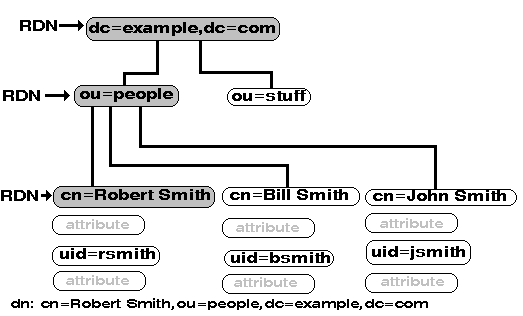

ldapjs: LDAP on node.js
Mark Cavage
@SeattleJS October 13, 2011
Who am I?
-
Distributed/Systems Programmer
Various systems/network/application jobs at Nortel, IBM, Amazon (AWS), and now Joyent.
-
High-Performance network applications have been my focus
In about every language/framework:
- C/C++
- Java
- Perl, Ruby, Python, ...
- JavaScript
-
❤ Node.js
I don't consider myself a master engineer, but I've been around the block enough to know that this thing is the proverbial shit.
Agenda
-
Crash Course
Everyone's heard of it, most developers know very little about it. I'll try to explain it in < 5m.
-
Why the f#$k would I want LDAP in JavaScript?
Mmmm...good question. We'll talk about why you should care.
-
Demo
If I convinced you that you should care, I cooked up a cheezy demo for this talk.
-
Some notes on bringing LDAP to Node.js
It wasn't the hardest problem, but it wasn't cake either. Mostly I hope to see others implement some of the "RFC Rolodex" in node, so I'll briefly describe a few sticking points. And then it's open season for questions (or beer, but I'm not paying).
What's LDAP?
X.500: a demon of the ancient world.
Ok seriously, What's LDAP?
-
Directory Service
Directory service is a broad term. Think of it as a key/value store, where keys are stored hierarchically. Oh wait, think of it like a file system where the "files" are structured/have a schema ☺.
-
LDAP was meant to be a gateway to X.500
You see, X.500 actually runs on the OSI stack, not TCP/IP.
-
It now stands alone
Eventually the world figured out X.500 really was a Balrog. LDAP got stood up with a storage engine, and it's been the de facto standard directory service since.
Here's a sample entry, in LDIF (the human-viewable mode for LDAP)
Put records like that in a tree, and that's LDAP
Image courtesy of zytrax.com.
LDAP has a rich search filter syntax
-
It's not SQL, but it does have full boolean logic
You can use "&", "|", "!", "=", ">=", "<=", and "*".
Tell me some more. Who uses it and why?
-
Ubiquitous on-premise for low write, high read information
Pretty much everybody has an LDAP for "whitepages". On top of that, lots of folks use it for tracking machines, networks, deploys, etc. And then there's ActiveDirectory.
-
Because of that, lots of applications already speak LDAP!
For example, stuff like Thunderbird, Jira, Peoplesoft, J2EE crap, Nagios, Switches, etc. all integrate "nicely" with LDAP. The list is seriously really long.
But you have to use an LDAP server...
- You'll be using BDB. Whether that works for you or not.
- Replication sucks. It's a bunch of multi-master garbage.
- It was designed by Telcos and nameless enterprise conglomerates. It's hard to use.
- There's an entire consulting industry around "directory synchronization".
- Nobody thought about building it to run over your application.
So why do this in Node.js?
-
LDAP is a stateful protocol
Unlike HTTP, LDAP is binary on the wire, and connection-oriented. That means you need a server framework that can handle loads of concurrent connections, and do it at low latency.
-
That's in Node's wheelhouse
Node.js is really good at managing connections. V8 is impressively fast (and erlang makes me throw up in my mouth).
-
Paradigm to let you build over anything
Express is a nice API. Mimicking that, you end up with an easy to embed way of putting LDAP anywhere.
Simple Search Server
Demo: ldapjs over GitHub API
If you're reading these outside of the talk, the code is on github.
Should you choose to cowboy up...
-
Use buffertools
The Node buffers API isn't quite at the same level of usability as something like Netty. I used buffertools to work around most of it. There are still cases in ldapjs where I end up copying.
-
Message framing is a PITA
So LDAP isn't like HTTP where it's easy to stream. It's possible to write a truly streaming parser, but it's just not worth it (IMO). You really need to drive your stack to test under/over-runs.
-
V8 is impressively fast
When I started, I wasn't sure if I'd have to do the wire-bits in C++ for performance. There is a big performance gain to doing so (2-3x?), but given LDAP is almost always over something else (slower) that hasn't been the bottleneck.
Questions?
/
#